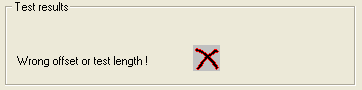
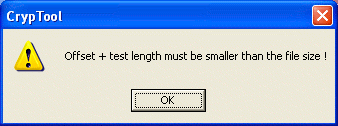
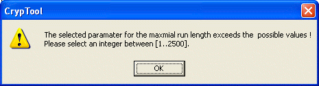
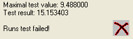

A default dialogue for the Runs Test looks like this:
In this dialogue two different tests are carried out, the Runs Test and the Long Run Test.
Various parameters can be selected and defined for the Runs Test. The significance level ‘alpha‚ can be any one of three predetermined values: 0.01, 0.05 and 0.10.
The Default offset and test length check box is used to decide whether the default values (offset = 0 and test length = file length) should be used in the test or user-defined values. Run length determines the run length up to which one should carry out the test.
If these values are incorrectly selected, then the following error message is displayed:

along with a message box that looks like this:

For the Long Run Test, however, only one parameter can be determined, long run length. This is the longest run that is allowed so that the file passes the test.
If long run length is incorrectly selected, the following message appears in the dialogue:
along with a message box that looks like this:

The Use randomly chosen test blocks checkbox is used to determine whether random offsets and test lengths should be generated. If an offset and test length are specified and the Use randomly chosen test blocks checkbox is enabled, the values defined by the user are used during generation of the random offset and test lengths.
To perform the test, click on the Perform test pushbutton.
After the Perform test pushbutton has been clicked, the dialogue should look like this:
The maximum test value is a statistical value that is dependent on the significance level and is not exceeded if the test is passed.
The test outcome is a statistical value generated by the test, which is compared with maximum test value.
If the data does not pass the Runs test, then the following message appears in the test status field:

If the data does not pass the Long Run test, then the following message appears in the test status field:
To close the dialogue and return to the CrypTool main window, click on Close.